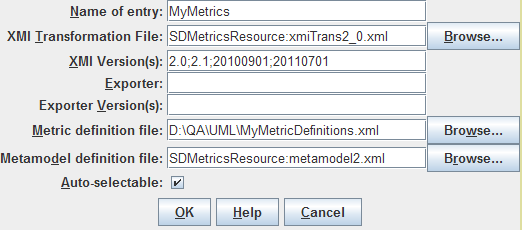

Contents > 4 The SDMetrics User Interface > 4.16 Setting Preferences > 4.16.1 Project File Sets > 4.16.1.1 Adding New Project File Sets
4.16.1.1 Adding New Project File Sets
To define a new project file set, click the "New..."
button. This opens an editor where you can specify the
parameters of the project file set:

Figure 26: Project File Set Editor
The parameters of a project file set are as follows:
- Name of entry: The name of the project file set.
- XMI Transformation File: The location of the XMI
transformation file of this project file set. Enter the file name
in the text field, or use the
"Browse..." button to locate the file via a file chooser
dialog.
- XMI version number(s): The XMI version numbers or
version-namepaces that the XMI transformation file handles.
For XMI versions 1.0 to 2.1, indicate the version number as shown
in the "version" attribute in the XMI file. For XMI version 2.4
and later, indicate the version-namespace, that is, the last part
of the XMI namespace. For example, the XMI 2.4.1 namespace is
"http://www.omg.org/spec/XMI/20110701", so the version-namespace is
20110701.
List all supported XMI version numbers and/or version namespaces,
separated by semicolons, e.g. 2.0;2.1;20110701.
- Exporter:
If you created the XMI transformation file for a specific XMI
exporter, enter the name of the exporter here. Use the exact name of
the exporter as indicated in the XMI.exporter element in the
documentation section of the XMI files produced by the exporter.
Leave this field empty if the XMI transformation file is not
written for a specific exporter.
- Exporter Version(s): If you created the XMI transformation file for a
specific version of an exporter, specify the version number
here. Use the exact version number as indicated in the
XMI.exporterVersion element in the XMI files produced by the
exporter. If the XMI transformation file is suitable for several exporter
versions, list all supporter exporter version numbers, separated by
semicolons.
Leave this field empty if the XMI transformation file is not written
for a specific version of the exporter.
- Metric definition file: The location of the metric definition
file of this project file set.
Enter the file name in the text field, or use the
"Browse..." button to locate the file via a file chooser
dialog.
- Metamodel definition file: The location of the metamodel
definition file of this project file set.
Enter the file name in the text field, or use the
"Browse..." button to locate the file via a file chooser
dialog.
- Auto-selectable: Controls if the project file set is
available for selection if you let SDMetrics automatically select
the project file set to use for a given XMI input file. When disabled,
the project file set can only be selected manually.
| Prev |
Up |
Next |
| Section 4.16.1 "Project File Sets" | Contents | Section 4.16.1.2 "Importing Project File Sets" |